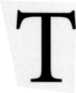
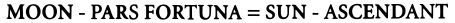
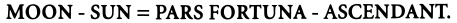
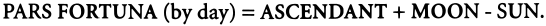
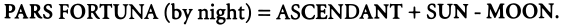
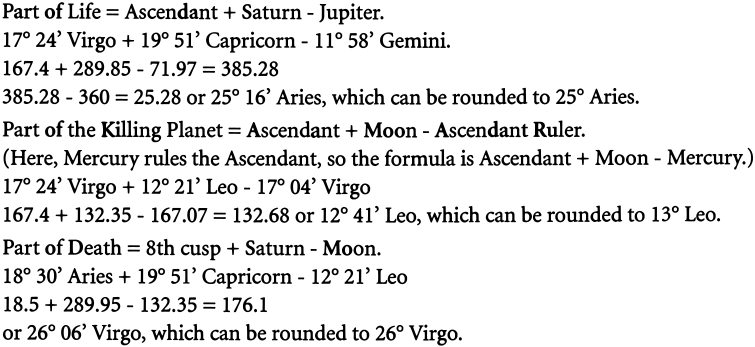
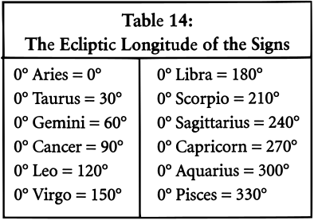
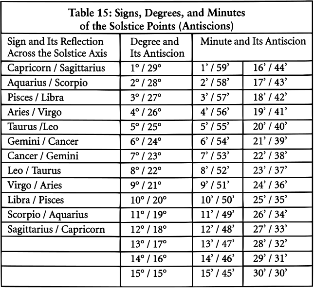

 his chapter deals with additional factors that are useful in horary interpretation. Critical degrees, which come to us by way of India, are the cusps of the Hindu lunar mansions. Fixed stars are the points of light in the heavens that do not wander (the planets are the wanderers). Arabic parts are points around the zodiac wheel that are mathematically derived from the positions of the planets and house cusps. Solstice points are reflections of the positions of planets and points in the solstitial axes of the horoscope. These techniques are often helpful as adjuncts or confirmations of the interpretation suggested by the primary significators.
CRITICAL DEGREES: TENSION AT THE BORDERS
Horary astrologers regard certain degrees of the zodiac as "critical" and pay attention when a significator falls in such a degree. The modern critical degrees lie at the boundaries between adjacent signs, and the traditional critical degrees separate the lunar Mansions. A planet in a critical degree is like a person wandering through the demilitarized zone between North and South Korea, or hanging out near the Berlin Wall during the Cold War. It's a risky place to be.
A cusp between two zodiacal segments is a pivotal, destabilizing zone. A significator at a critical degree is teeter-tottering between two realms of experience, and must make a choice about which way to go. Hence, critical degrees signify a crisis that requires resolution. Natal astrologers often say that people born on the cusp between zodiac signs are constantly buffeted by conflicting trends in their personalities.
The beginning and ending degrees of any sign imply a change of state. At 0° the planet has just entered a new sign, symbolically a new set of circumstances. Planets at early degrees continue to feel the tug of the previous sign. Planets at early degrees will also be quite active in their new location because they will form a major or minor aspect to all the other planets in the chart before they again change sign.
At 29° the significator is about to leave its sign and undergo a change of state. We can liken this process to ice becoming water, or water becoming steam. A planet at 29° is "impatient," can hardly wait to enter the next sign. As Ivy Jacobson puts it, such a planet is "at the end of its rope." Furthermore, a planet in the last degree is in the terms (an essential dignity) of Mars or Saturn and thus under a malefic influence.
THE LUNAR MANSIONS: A LITTLE MOON MAGIC
In addition to the first and last degrees of any zodiac sign, certain degrees were traditionally considered critical by virtue of lying on the boundaries between the Mansions of the Moon. In societies that used a lunar calendar, the lunar month of twenty-eight days was the key unit of time measurement. The Moon's actual "sidereal" revolution around the earth as viewed from the Sun is twenty-seven days, seven hours, forty-three minutes, and eleven seconds. Because the earth is also moving around the Sun as the Moon travels around the earth, it takes a little longer for the Moon to go from one Full Moon to the next. This full cycle of the Moon as viewed from the earth (the Moon's "synodic" revolution) takes 29.53 days.
The twenty-eight-day lunar month closely approximates the actual lunar revolution. For reasons based on magic rather than science, the ancients used twenty-eight days for the Moon's revolution. Each lunar day is considered a "mansion" of the moon. The cusps between the lunar mansions signify the end of one phase of activity and the beginning of another. Critical times occur when a planet moves from one lunar mansion to the next. A planet in a critical degree has just entered a new lunar mansion and is in a tense, unresolved stated.
Dividing the 360 degrees of the zodiac into twenty-eight lunar mansions means that each lunar mansion contains 12.85° of ecliptic longitude, which in degree notation is 12° 51' 26". The reader will note that the width of a lunar mansion is approximately the average daily motion of the Moon.
Figure 8: The Mansions of the Moon
We start measuring the lunar Mansions at the vernal equinox or 0° Aries, which is the first critical degree. Because there are 12° 51' 26" in each lunar Mansion, the next one starts at 12° 51' 26"Aries. Astrologers often round this off to 13° Aries, but inspection of the following table shows that 12° Aries is just as critical as 13° Aries. This table will make clear the derivation of the remaining critical degrees as they repeat around the zodiac in the cardinal, fixed, and mutable signs.
FIXED STARS AND MALEFIC DEGREES
The ancients discovered the existence of planets when they noticed that certain "stars" wandered, that is, did not remain fixed to the canopy of the heavens. The planets get the most astrological fanfare these days, but in the past the astrologers also paid close attention to the fixed stars. The number of fixed stars is countless; and, fortunately, only a few are regarded as significant in Western horary astrology. Such potent fixed stars generally have a northern latitude, or if southern, have a declination near the ecliptic. Astrologers tend to use the brighter, more prominent stars.
Most horary astrologers consider fixed stars only when they conjoin a significator, the Ascendant, or other angle, within an orb of one degree. Some astrologers also regard a close opposition to a fixed star as important. There is no question that a horary significator in close conjunction to a fixed star will be affected for better or worse depending on the nature of the star.
Below is a list of some important fixed stars with their positions for January of the year 2000 and their meanings in horary astrology. To find the past or future position of a fixed star, note that the fixed stars appear to "move forward" in the zodiac at a rate of one degree (one degree) every seventy-two years. In other words, because we choose to move the vernal equinox (0° Aries) backward each year with respect to the constellations of the zodiac (precession), all the fixed stars appear to move forward by the same amount (the actual annual movement of the stars is so slight that we can ignore it). The equinox itself takes about 25,868 years to complete its 360-degree precession backward through the twelve constellations of the zodiac.
Here is the arithmetic: 360°divided by 25,868 years equals 0.01392° per year. Converting degrees to decimals, we see that the fixed stars appear to move forward in the zodiac at about 0° 0' 50" per year. That's very slow. Thus, for each year in the future you need to add fifty seconds of arc, and for each decade into the future you must add about eight minutes of arc, to get the new position. To find a past position, you subtract the same amount for each year or decade going back.
Now for the list of the handful of fixed stars I pay attention to in horary analysis. I only consider them when they conjoin a significator within one degree. They are listed here in order of ecliptic longitude, according to their January 2000 positions.
Caput Algol: 26° 10' Taurus
Caput Algol is the head of the Medusa, which Perseus chopped off while looking at its reflection in his shield. If you look at it directly, the evil countenance with its snakes for locks turns you into stone. Caput Algol is a most malefic influence. At its worst, it signifies decapitation (beheading), disaster, and death. See the chart for Valujet Flight 592 on page 30 in Chapter Two. More commonly, a significator conjoining this malefic represents a person who will lose his head over the matter.
Alcyone: 00° 00' Gemini
Not far beyond the Medusa's head is Alcyone of the Pleiades or the Weeping Sisters. Maybe she is crying because Medusa got her head chopped off.. Whatever the reason, your signification's conjunction with Alcyone will give you something to cry about.
Being One's Own Worst Enemy: 22° Leo
22° of Leo is apparently a malefic degree, not a fixed star, which signifies putting one's worst foot forward and being unable to work in one's own best interest. Since most of us do this quite well without celestial assistance, I question whether a degree of the zodiac needs to be set aside for this purpose. On the other hand, my natal Mercury is near this degree and my wife tells me I have a tendency to put my foot in my mouth, so maybe there is something to it.
Regulus: 29° 50' Leo
Lilly gave Regulus six (6) points in his system of accidental dignities. He regarded this heart of the lion, Cor Leonis, as the most benefic fixed star in the universe. The lion has a heart of gold and shares his good fortune with you when you get close enough by conjunction. Because Leo would be king, Regulus is a royal star and favors matters of status and leadership. Lilly said that Regulus gives glory, wealth, and great honors, chiefly by military preferment
Vindemiatrix: 9° 56' Libra
This is the traditional fixed star of widowhood. If you see this prominent in your spouse's chart, watch out. The location of this star is used to calculate the Part of Widowhood = Ascendant + Vindemiatrix - Neptune.
Spica: 23° 50' Libra, and Arcturus: 24° 14' Libra
It's hard to discuss Spica without mentioning her tag-along Arcturus. These two benefic stars are the only rays of good fortune in the Via Combusta (mid-Libra to mid-Scorpio). Spica has the nature of Venus, the lesser benefic. If your significator happens to be within a degree of either star, it won't get burned by the heat and stung by the scorpion. Instead, it will receive rewards and prosperity. Spica conjoining Mars in the 10th in the Via Combusta (see p. 68) gave Joan McEvers' son a successful stained glass business. She overlooked Spica in reading this chart, but in Volume II of her series The Only Way to Learn Astrology she calls Spica the "Lucky One" and describes it as signifying "wealth, fame, honor, glamour."
Serpentis: 19° Scorpio (always)
Serpentis is not a fixed star. According to some astrologers, it is a particularly nasty degree of the zodiac. It has a fixed symbolism and does not precess with the equinoxes. Those who use Serpentis call it "the accursed degree of the accursed sign whose malefic influence never weakens." Wow, that's bad! It has the tragic nature of Saturn combined with Mars. Serpentis rarely comes up prominent in my charts. I include it here because Derek Appleby gives several convincing examples of its evil nature in his book on horary. On the other hand, Olivia Barclay, on page 211 of her text, gives an example "Shall I go to Australia?" where the Ascendant ruler is at 19° 08' Scorpio and things work out splendidly for the querent. What's good for the goose may not be good for the gander.
The reader will find a more complete list of fixed stars, including most of the ones Lilly used, with their longitudes and keywords, in Appendix A.
THE NOT-NECESSARILY-ARABIC POINTS, LOTS, OR PARTS
The Parts are significant points around the horoscope. The term "Arabic Part" is partly a misnomer because the Parts existed long before the Arabs wrote about them. They got the name "Arabic" because eighth and ninth century Arab astrologers went overboard with the Parts they had inherited from the Babylonian, Egyptian, and Greek astrologers. The most prominent Arab astrologer of the ninth century, Abu Ma'shar, reported learning ninetyseven parts from the ancient Babylonians and Egyptians. The first century book by Dorotheus discusses several of these Parts or Lots.
When I said the Arabs went overboard inventing new Parts, I wasn't kidding. Here are some of the Parts the Arabs came up with: the Parts of barley, beans, onions, lentils, rice, sesame, sugar, dates, honey, wine, silk, salted things, pungent foods, sweet medicines, dismissal, resignation, lost animals, lawsuits, torture, decapitation, clouds, floods, sultans, secrets, and urgent wishes, to name a few. I suppose if you lost your bag of groceries, many of these would come in handy.
In practice, I always use the Part of Fortune. Although it is a point on the ecliptic and not a planet, I regard Pars Fortuna as a co-ruler of the 2nd house of money, income, and valuable possessions. I usually ignore the other Parts unless the question is so important or confusing that I need as much information as I can get from the chart.
Pars Fortuna was an invention of Hellenistic Egypt, but it derived from the Babylonian tradition of worshipping the Moon as the great god Sin. Because of the tremendous significance of the Moon, early astrologers gave the Moon a special "lot" in the horoscope. They called Pars Fortuna the "place of the Moon" or the "horoscopos (Ascendant) of the Moon."
The natural symbolism of the Ascendant is of the Sun rising over the horizon at dawn. The Part of Fortune is to the Moon what the Ascendant is to the Sun. In other words, Pars Fortuna is the symbolic "Ascendant" or dawning of the Moon in the chart. The ancients considered the Part of Fortune to be equal in importance to the Ascendant, and they regarded the Ascendant as the most powerful point in the chart.
The meaning of the Part of Fortune allows us to derive a formula for its calculation. The Moon is as far from Pars Fortuna as the Sun is from the Ascendant. In other words, the distance from the Part of Fortune to the Moon is equal to the distance from the Ascendant to the Sun. Algebraically, this becomes the formula:

If you remember your algebra, and transpose the equation, you get the following: MOON = PARS FORTUNA + SUN - ASCENDANT;

In English, this last formula is the same as saying that the distance from the Sun to the Moon is the same as the distance from the Ascendant to the Part of Fortune.
And finally,

I say "by day" because the Arabs used two Parts of Fortune, one for day charts and one for night charts. Because the Sun ruled the day, the diurnal (day) Part of Fortune is the point where the Moon would be if the Sun were on the Ascendant. Because the Moon rules the night, the nocturnal (night) Part of Fortune is the point where the Sun would lie if the Moon were on the Ascendant. The formula for the night Part of Fortune is:

William Lilly regularly used the Part of Fortune in his charts. He used only the daytime Pars Fortuna and did not feel a need to use a different formula for nighttime charts. The only other part that Lilly used in Christian Astrology (CA, p.238) is the part of children (Pars Filiorum = Ascendant + Jupiter - Mars) to answer the question, "Will I ever have children?" This example was discussed on pages 43 and 44 in Chapter Three.
As with fixed stars, there are dozens of Parts available to the horary astrologer. Most astrologers, however, use only a handful of Parts; for example, the Part of Death (Ascendant + 8th Cusp - Moon), the Part of Sickness (Ascendant + Mars - Saturn), the Part of Marriage (Ascendant + 7th Cusp - Venus), and the Part of Mother (Ascendant + Moon - Venus).
Notice that the Part of Death depends on the 8th cusp, which will vary depending on which house system you use. Most likely, the Arabs used the equal house system in which the 8th house cusp is exactly quincunx the Ascendant. There is another formula for the Part of Death that includes Saturn, the natural significator of death; this medieval Part of Death is the 8th cusp + Saturn - Moon. There is also a Point of Death described by Charles Emerson that is independent of the 8th cusp. Emerson's Point of Death has the formula Mars + Saturn - MC and is extremely helpful in questions about illness, death, and dying.
There is a logic to the way the parts are derived. Parts generally take the angular distance between two natural significators and project that distance from the Ascendant. Thus, mothers are naturally signified by both the Moon and Venus, the Moon being the more motherly of the two. The angle between the Moon and Venus thus symbolically relates to the querent's mother. Since the querent is at the Ascendant, the astrologer adds the distance between the mother's two significators to the Ascendant to see what relation she has to the querent at the Ascendant. Doing this will locate a point around the wheel that is the Part of the Querent's Mother.
Let's do a similar analysis for the Part of Sickness. The two malefics are Mars and Saturn. Mars rejoices in the 6th house of illness, and Saturn delights in the 12th house of confinement. The angle between Mars and Saturn must symbolize something about the querent's sickness and confinement. By subtracting the longitude of Saturn from the longitude of Mars, you get the angle between them. To see how that angle affects the querent, you start at the Ascendant (representing the querent) and measure that same distance between Saturn and Mars out from the Ascendant. This procedure will locate a point on the wheel that is the Part of the Querent's Sickness.
Modern astrologers calculate the Parts. The Arabs used the astrolabe to rotate the chart and place the significant points around the wheel. For example, if you rotate the chart so that the Sun is on the Ascendant, the Moon will be on the Part of Fortune in a daytime chart. Similarly, with the Sun rotated to the Ascendant, Mercury will be on the Part of Commerce, Venus on the Part of Love, Mars on the Point of Passion and the Sword, Jupiter on the Point of Increase (and Pomegranates), Saturn on the Point of Fatality (and the Hour Glass), Uranus on the Part of Catastrophe (and lightning), Neptune on the Point of Treachery, and Pluto on the Point of Organization. The algebraic formula for all these parts is Ascendant + Planet - Sun. (For the interested reader, I have included an extensive list of Arabic Parts in Appendix B.)
The following chart illustrates the use of Arabic Parts by Ganivet, a fifteenth-century horary astrologer. Robert Zoller reported this chart in his well-researched book The Arabic Parts in Astrology. It is the horoscope of a decumbiture from the book Amicus Medicorum by Jean Ganivet. See Chart 28.
I calculated this chart by computer and got slightly different values from those reported by Ganivet who used fifteenth-century tables. Ganivet used Campanus houses. A decumbiture is literally a "lying down" A horary chart erected for the time the person took ill is called a decumbiture chart. In such a chart, the 1st house stands for the patient.
About 7:18 in the morning of August 7, 1431 (a Mars day), at 04E53 / 45N31, the physician Dr. Henry Amici asked the astrologer Jean Ganivet to erect a decumbiture chart for the lord Dean of Vienne who had fallen ill. Ganivet told the doctor his patient was going to die. It is a Mars day and Mars rules the 8th house of death in this chart; the chart is radical and fit to judge. Let's see how Ganivet interpreted the chart.
The 1st house represents the ill Dean who has three significators in this chart. With Virgo rising, Mercury is the Dean's primary significator. Mercury also conjoins the Ascendant, making this planet the Dean's significator twice over. The Moon is the universal co-ruler of the Dean, and Venus occupying the 1st house is also a co-ruler. As ruler of the Ascendant, Mercury also signifies the Dean's health and well-being. Ganivet notes that the Moon is under the Sunbeams and applying to a New Moon with the Sun. As you recall, the applying New Moon is a most malefic influence in traditional horary astrology. The approaching New Moon was enough to make Ganivet give a bad prognosis.
But one factor is not enough; the astrologer must have confirmation of such a negative outcome. Ganivet next looked to the condition of Mercury, the Dean's primary ruler. Mercury is strong at the Ascendant and in his own sign. Unfortunately, Mercury is becoming stationary and is about the turn retrograde in the near future. The symbolism was too much for Ganivet. He pronounced that, like Mercury, the Dean's health would come to a standstill and then reverse itself. Because Mercury rules the mind, Ganivet said the Dean would become delirious as Mercury turned backward. Ganivet wanted more confirmation so he turned to the Arabic Parts. Specifically, he used the Part of Life (Ascendant + Saturn - Jupiter), the Part of the Killing Planet (Ascendant + Ascendant Ruler - Moon), and the Part of Death. Ganivet used the older formula for the Part of Death (8th cusp + Saturn - Moon).
I will calculate each from this chart to show you how it is done. It helps to convert each planetary position to ecliptic longitude using Table 14.
Chart 28: Decumbiture of the Lord Dean of Vienne August 7, 1431, 7:18 A.M. GMT, 04E53, 45N31 Campanus Houses


Ganivet noted that the Part of Life lies in the 8th house of death, the Part of Death lies in the 1st house of life, and these two parts are in opposition. These placements all confirm a death. In addition, the Part of the Killing Planet lies between the Moon and the Sun, and the Moon (co-ruler of the Dean) will conjoin the Part of the Killing Planet in only twenty seconds of arc. The Dean is rapidly approaching death, perhaps in twenty hours, or at most in twenty days. Twenty hours is more likely because the Dean's other co-ruler, Venus, will oppose the Part of Life in only 2° (two days), and will conjoin the Part of Death in the 1st house in 3° (three days). All the evidence suggests that the Dean's days are numbered.
What was the outcome? Ganivet tells us that the Dean "became delirious before one natural day and died before two." Ganivet did not follow the method I am advocating in this book of considering first the aspects between primary significators. In this chart Mars rules the 8th house of death. Mercury is applying to a sextile with Mars which would normally be a good sign, except that Mercury (the Dean's principle ruler) turns retrograde before completing the sextile. Mercury is refrained (refranation) by turning retrograde from a good relationship with the ruler of death. The Dean's co-ruler, the Moon, will form a square with Mars, the death planet in this chart. Both Mercury's refranation and the Moon's square to the 8th house ruler suggest that the Dean will bite the dust.
SOLSTICE POINTS OR ANTISCIONS
The word "Sol-stice" comes from the Latin and means "the Sun stands still" The solstices occur twice each year: the Summer Solstice begins summer (0° Cancer) when the Sun reaches its most northern point above the Celestial Equator, and the Winter Solstice begins winter (0° Capricorn) when the Sun reaches its most southern declination. The solstice points or Antiscions are reflections of each other along the Ecliptic on either side of the Summer and Winter Solstices.
In other words, the antiscia are the two points on the ecliptic the same distance east or west of the summer or winter solstice. They represent the two days of the year when the Sun has the same declination north or south of the Celestial Equator. Because antiscion points are equidistant from the Solstices, the midpoint of a planet's position and its antiscion is always one of the Solstices, that is, 0° of Cancer or Capricorn. For example, the antiscion of 9° Capricorn is 21° Sagittarius. The signs and their corresponding antiscion signs are: Aries / Virgo, Taurus / Leo, Gemini / Cancer, Libra / Pisces, Scorpio / Aquarius, and Sagittarius / Capricorn.
Some modern astrologers believe that solstice points represent turning points in the life of the native. The following table shows which signs, degrees and minutes are reflected upon one another:

Using Table 15, we see that 10° Capricorn has its solstice point (antiscion) at 29° 60' (another way to say 30°) minus 10°, or 20° Sagittarius. The solstice point of Caput Algol (at 26°01' Taurus in 1990) lies in Leo at 29° 60' minus 26° 01, or 3° 59' Leo. The solstice point (antiscion) of Spica (at 23° 50' Libra in 2000) is in Pisces at 29° 60' minus 23° 50', or at 6° 10' Pisces.
According to Henry Coley, "the learned do hold an Antiscion to be equivalent to a sextile or trine Aspect, especially if they were Fortunate Planets; and a Contrantiscion to be of the nature of a square or opposition." Lilly looked for the antiscions of planets in a horary chart to see if there were conjunctions or oppositions to the antiscion degrees. He stated that the antiscions "of good planets. ..are equal to a sextile or trine," whereas contrascions are "of the nature of a square or opposition." A contrascion (or contrantiscion) is the point opposite (180° away from) the antiscion degree. In other words, the contrascion of a planet is the antiscion of the point opposite to the planet on the ecliptic. Lilly used the word "con- tra-antiscion" for contrascion.
Figure 10: Contrascions (Contrantiscions)
Figure 9: Antiscion Signs
There is a link between antiscions / contrascions and parallels / contraparallels of declination. A conjunction to an antiscion degree means that the two planets occupy the two points on the Ecliptic where the Sun has the same declination. Thus, if the antiscion of a benefic (Venus or Jupiter) conjoins a significator, the relationship is reminiscent of a parallel of declination, and this supports a positive outcome. A conjunction to a contrascion degree means that the two planets occupy the two points on the Ecliptic where the Sun has equal but opposite declinations. If the antiscion of a malefic (Mars, Saturn, Uranus, Neptune, Pluto) falls opposite a significator, the relationship is similar to a contraparallel of declination, and this supports an unfortunate outcome.
Conjunctions and oppositions to solstice points provide useful information in horary judgment. The chart for Sara's baby illustrates their use, as does the chart for Valujet Flight 592 on page 30 in Chapter Two.
Figure 11 (on the following page) is a graphic representation of the relation of antiscion and contrantiscion signs. The horizontal lines lines connect the antiscion signs, while the vertical lines connect the contrantiscion signs.
Figure 11: Matrix of Antiscions and Contrantiscions